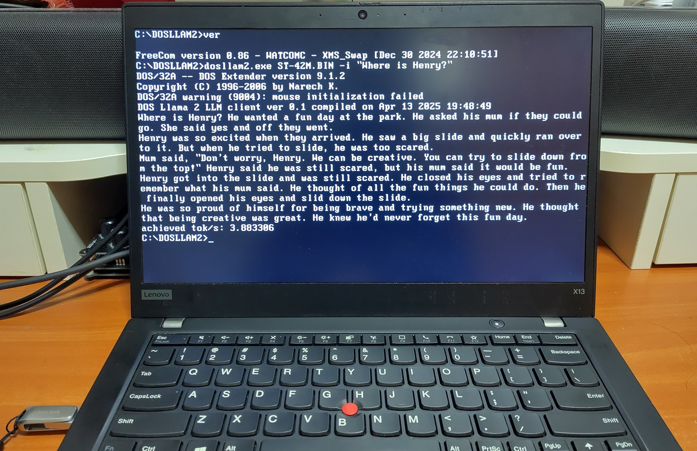
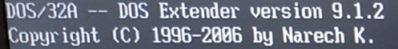

Ever thought of running a local Large Language Model (LLM) on a vintage PC running DOS? Now you can!
Demos
This video shows DOS Llama 2 LLM client running on 2 vintage DOS machines.
Running on Thinkpad T42 (2004) and Toshiba Satellite 315CDT (1996). Their CPUs are Pentium M 735 1.7 Ghz and Pentium MMX 200Mhz respectively.
Running on FreeDOS 1.4 on Thinkpad X13 Gen 1 (2020) with Core i5-10310U 1.7Ghz.
Everything is open sourced with executable available here: https://github.com/yeokm1/dosllam2
Background
2 years ago I wrote a DOS ChatGPT client and many retrocomputing enthusiasts in the community wrote similar clients for other vintage platforms. They all had a similar issue, dependency on some remote service. What about running things locally?
Conventional wisdom states that running LLMs locally will require computers with high performance specifications especially GPUs with lots of VRAM. But is this actually true?
In 2023, Andreq Karpathy released his open-source llama2.c project which allows inferencing of Meta’s Llama 2 models with just a single C file. Other developers then ported his project to run on many platforms including some vintage ones like Windows 98 and Powerbook G4. Someone even ported it to run on a microcontroller.
This then inspired me to think, could the same thing be done for an even older platform like DOS?
Based on the demo video and screenshots, it is obvious I managed to do this so this blog post will show how I did it.
Technical details
The original code
llama2.c is written in a single-C file designed to inference only fp32 models of the Llama-2 architecture.
This repo still cares about efficiency, but not at the cost of simplicity, readability or portability. https://github.com/karpathy/llama2.c
For ease of testing of smaller models, Karpathy trained several small models on the TinyStories dataset that only have sizes of 260K, 15M, 42M and 110M. This is to enable some basic level of LLM functionality on resource-constraints systems.
llama2.c although written for portability in mind, still has some challenges when it comes to making the codebase work for vintage systems.
Compilation and DOS Extender
The compiler I selected is Open Watcom v2 (OWC). I used this as I was familiar with it having used it for my DOS ChatGPT client as well.
OWC provides a GUI IDE but I prefer to use a Makefile to keep the project relatively lightweight and easy to manage.
This is the OWC Makefile I used to compile my project:
TARGET = dosllam2
OBJS = dosllam2.obj
CFLAGS = -zdp -za99
LDFLAGS = SYSTEM dos32a NAME $(TARGET)
all: clean $(TARGET).exe
$(TARGET).obj: dosllam2.c
wcc386 $(CFLAGS) dosllam2.c
$(TARGET).exe: $(OBJS)
wlink $(LDFLAGS) FILE $(OBJS)
The compiler toolchain uses wcc386 and wlink. I used -za99 to enable C99 support otherwise it will revert to C90.
Special attention is given to the dos32a flag. For most DOS programs, you generally can compile for 2 typical modes:
- Traditional 16-bit architecture compatible with the Intel 8088 used in the first IBM PC
- 32-bit DOS extender support for Intel 386 CPUs or newer
Since the llama2.c codebase is written for modern systems of at least 32-bit, I must go for the latter option. The memory requirement even for the tiniest of LLMs demands at least a 32-bit system too.
One common 32-bit DOS extender used in the DOS-era is DOS/4G. This extender allows programs to access to more memory above the 640KB conventional memory limit by switching the CPU to 32-bit protected mode. One very common use case is that of games which required gobs of memory, famous examples are Doom and Descent.
OWC supports DOS/4G as a choice of extender as well as another newer and open-source DOS/32 by Narech Koumar released in 2006.
This extender can be embedded into your program as a runtime or run separately. Either way, most DOS-extenders will show a startup banner like the above.
Porting efforts
The original llama2.c codebase still assumes a reasonably modern-featured C compiler. Although the OWC project is still being maintained, there was a bit of porting effort required for me to get the code to compile.
Floating point operations
The inferencing requires heavy use of floating point operations which OWC does not support well.
#define sqrtf(x) ((float)sqrt((double)(x)))
#define powf(x, y) ((float)pow((double)(x), (double)(y)))
#define cosf(x) ((float)cos((double)(x)))
#define sinf(x) ((float)sin((double)(x)))
#define expf(x) ((float)exp((double)(x)))
So I had to define some macros using existing double functions.
Memory map
Modern compilers support the mmap or similar functions which allow files in storage to be mapped into memory. The contents of the file are not all read into memory at once but are lazy-loaded i.e only necessary portions are read when required helping to speed up the use of especially large files.
OWC does not support this thus I have to modify all memory-mapping calls to load the entire LLM file into memory. This has the effect of increasing initial load times.
Timing
To measure inference speed, the program requires use of timing APIs:
long time_in_ms() {
struct timespec time;
clock_gettime(CLOCK_REALTIME, &time);
return time.tv_sec * 1000 + time.tv_nsec / 1000000;
}
Those APIs are not available thus I have to change to something els.
long time_in_ms() {
return (clock() * 1000L) / CLOCKS_PER_SEC;
}
OWC provides the clock() which counts processor tick time which in seconds can be obtained by divided by the internal macro CLOCKS_PER_SEC.
Filename length limits
DOS has a 8.3 filename limit. This also impacts the C code used to read the files.
// Previous
char *tokenizer_path = "tokenizer.bin";
//New
char *tokenizer_path = "tokenize.bin";
The original program loads a tokenizer file containing a hard-coded path which does not adhere to the 8.3 rule. Although the solution to shorten the filename by one character is simple, it caused me some troubleshooting time initially as I wondered why this loading did not work on my vintage system.
Benchmarks
I did some benchmarks using PCs of 3-decades ago all the way to modern systems.
Data is in tokens per second. All the operating systems are in MS-DOS 6.22 with no memory manager loaded.
| System | CPU | RAM | 260K | 15M | 42M | 110M |
|---|---|---|---|---|---|---|
| Generic 486 system (1990s) | 486 DX-2 66Mhz | 32MB EDO | 2.08 | - | - | - |
| Toshiba Satellite 315CDT (1996) | Pentium MMX 200Mhz | 96MB EDO | 15.32 | 0.43 | - | - |
| Tweener PC (2001) | Pentium III 667Mhz | 512MB SDRAM | 80.04 | 2.35 | 0.89 | - |
| ThinkPad T42 (2004) | Pentium M 735 1.7 Ghz | 2GB DDR | 331.6 | 11.55 | 4.42 | 1.71 |
| ThinkPad X61 (2007) | Core 2 Duo T7300 2.00Ghz | 4GB DDR2 | 171.89 | 5.26 | 2.00 | 1.00 |
| ThinkPad X301 (2008) | Core 2 Duo SU9400 1.4 GHz | 8GB DDR3 | 171.95 | 5.30 | 1.98 | 0.77 |
| ThinkPad X13G1 (2020) | Core i5-10310U 1.7Ghz | 16GB DDR4 | 386.36 | 10.51 | 3.89 | 1.53 |
| Modern Desktop (2024) | AMD Ryzen 5 7600 3.8 Ghz | 128GB DDR5 | 927.27 | 15.95 | - | - |
As expected, the more modern the system, the faster the inference speed.
An interesting observation is that my desktop with a modern Ryzen CPU and 128GB RAM cannot load the larger models due to memory allocation error. Perhaps some kind of overflow/bug in the DOS extender or protected mode implementation of the AMD CPU/motherboard.
More details about my vintage PCs in that table can be found here.
Conclusion
The porting effort I took, testing and documenting this is a simple weekend job. Most of the efforts have to be attributed to the original developer of this project Andrej Karpathy without which this would not have been possible.
Still, I’m amazed what can still be accomplished with vintage systems.


{kind=link}
{kind=link}